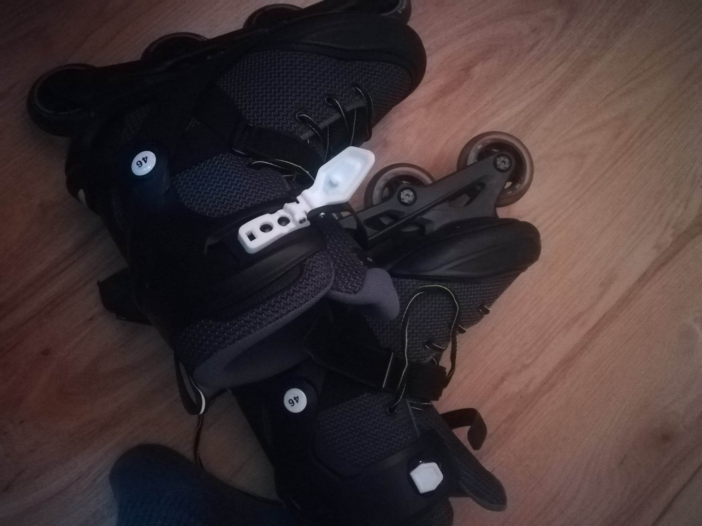
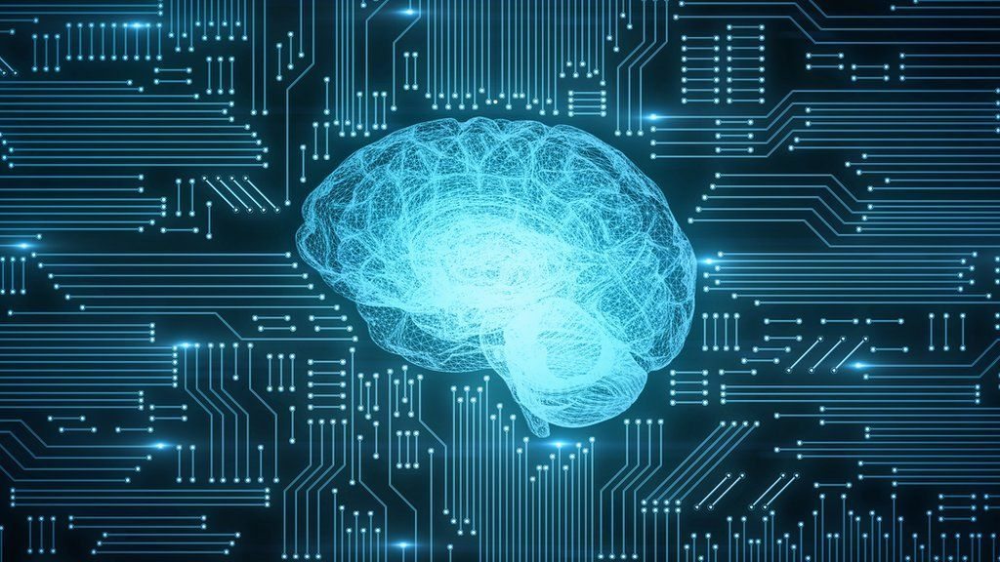

Currently I am a second-year student at Wroclaw University of Science and Technology and I am studying Algorithmic Computer Science.
I have many passions, both professional and less related to science. My main topics of interest are:
Non-computer related:
Roller skating: I have been learning roller skating for 2-3 years now and it is definitely one of my favourite sports.
Playing guitar: I've got my first guitar 2 years ago and since then I come back to this instrument from time to time.
Computer related:
Mobile applications: This year I started course about creating applications for mobile phones, tablets etc. and I have to admit it really got my interest.
Artificial intelligence: Nowadays AI has become one of the fastest growing fields of science and it is absolutely marvelous to watch this field expand.
My journey with rollerskating!:
How did my journey with rollerskating start?
Unexpected start
During the Covid-19 pandemic I've had plenty of time to think about my life and so I decided that I wanted to learn new things and gain new skills. Back then I wasn't really aware of the fact that rollerskating was about to become a very big part of my life. Down below is the photo of my first ever rolling skates:
Quick improvement
In the beginning I struggled to surpass distance of 10 metres in front of my house. To be honest I almost gave up after first 50 tries but then I decided to try roller skating on the track near my living place. I had much more space that way and I felt more comfortable after all. Also, I've invited my friends who can roller skate very well to teach me. After 2 months I was properly skating forward and for me it was a big success!

Overall experience and friends I made by roller skating
Way to spend time
For me roller skating is amazing. I've always wanted to have many hobbies and roller skating is one of the best in my life. Every time I had free time or just felt I needed to go skating I simply went out of house and for a couple of hours I could just completely deep dive into this world. When I am roller skating I just forget about my problems and let myself live in the moment
Roller skating friends
I don't know a better way to make friends rather that just go skating with them. In the 3-4 months time I was able to make dozens of friends by simply asking if they would like to go roller skating with me! All that was needed for that to happen was one party and two pairs of working roller skates.
My journey with playing on a guitar!:
First guitar:
I've always dreamt about being able to play an instrument and so... around 4 years ago, maybe 5, I got to play guitar for the first time!
It was my grandfather's guitar and it was a really old one, weathered, with traces of often usage. Nevertheless the guitar had a beautiful sound and after I had borrowed it, I started playing on it non-stop 24/7.
Guitar classes and my improvement:
The very first month of me playing guitar went by incredibly fast. There was no single day without plucking the strings of my instrument and I was practicing maybe like 4-8 hours a day because I couldn't stop.
I've managed to improve my skills and the progress was huge. At one moment I received a new guitar and signed up for guitar classes, which was one of the best choices I have ever made!
Below is a photo of me and my (back then) brand new guitar!
And here are some videos of my teacher trying to teach me new songs:
Overall experience and videos of me playing guitar
Nowadays I don't play guitar that often but I still come back to this instrument from time to time. All the memories I've gathered while playing are unforgettable and they helped me become a person that I am today.
In the end I am putting here a couple of tapes of me playing guitar, sorry for your ears:3
What are mobile applications?
Definition
A mobile application or app is a computer program or software application designed to run on a mobile device such as a phone, tablet, or watch. Mobile applications often stand in contrast to desktop applications which are designed to run on desktop computers, and web applications which run in mobile web browsers rather than directly on the mobile device. Apps were originally intended for productivity assistance such as email, calendar, and contact databases, but the public demand for apps caused rapid expansion into other areas such as mobile games, factory automation, GPS and location-based services, order-tracking, and ticket purchases, so that there are now millions of apps available. Many apps require Internet access. Apps are generally downloaded from app stores, which are a type of digital distribution platforms. The term "app", short for "application", has since become very popular; in 2010, it was listed as "Word of the Year" by the American Dialect Society. Apps are broadly classified into three types: native apps, hybrid and web apps. Native applications are designed specifically for a mobile operating system, typically iOS or Android. Web apps are written in HTML5 or CSS and typically run through a browser. Hybrid apps are built using web technologies such as JavaScript, CSS, and HTML5 and function like web apps disguised in a native container.
Types of mobile apps
Mobile applications may be classified by numerous methods. A common scheme is to distinguish native, web-based, and hybrid apps.
Native apps
All apps targeted toward a particular mobile platform are known as native apps. Therefore, an app intended for Apple device does not run in Android devices. As a result, most businesses develop apps for multiple platforms. While developing native apps, professionals incorporate best-in-class user interface modules. This accounts for better performance, consistency and good user experience. Users also benefit from wider access to application programming interfaces and make limitless use of all apps from the particular device. Further, they also switch over from one app to another effortlessly. The main purpose for creating such apps is to ensure best performance for a specific mobile operating system.
Web-based app
A web-based app is implemented with the standard web technologies of HTML, CSS, and JavaScript. Internet access is typically required for proper behavior or being able to use all features compared to offline usage. Most, if not all, user data is stored in the cloud. The performance of these apps is similar to a web application running in a browser, which can be noticeably slower than the equivalent native app. It also may not have the same level of features as the native app.
Hybrid app
The concept of the hybrid app is a mix of native and web-based apps. Apps developed using Apache Cordova, Flutter, Xamarin, React Native, Sencha Touch, and other frameworks fall into this category. These are made to support web and native technologies across multiple platforms. Moreover, these apps are easier and faster to develop. It involves use of single codebase which works in multiple mobile operating systems. Despite such advantages, hybrid apps exhibit lower performance. Often, apps fail to bear the same look-and-feel in different mobile operating systems.
Distribution of mobile apps
The biggest players
Google Play
Google Play (formerly known as the Android Market) is an international online software store developed by Google for Android devices. It opened in October 2008. In July 2013, the number of apps downloaded via the Google Play Store surpassed 50 billion, of the over 1 million apps available. As of September 2016, according to Statista the number of apps available exceeded 2.4 million. Over 80% of apps in the Google Play Store are free to download. The store generated a revenue of 6 billion U.S. dollars in 2015.
App Store
Apple's App Store for iOS and iPadOS was not the first app distribution service, but it ignited the mobile revolution and was opened on July 10, 2008, and as of September 2016, reported over 140 billion downloads. The original AppStore was first demonstrated to Steve Jobs in 1993 by Jesse Tayler at NeXTWorld Expo As of June 6, 2011, there were 425,000 apps available, which had been downloaded by 200 million iOS users. During Apple's 2012 Worldwide Developers Conference, CEO Tim Cook announced that the App Store has 650,000 available apps to download as well as 30 billion apps downloaded from the app store until that date. From an alternative perspective, figures seen in July 2013 by the BBC from tracking service Adeven indicate over two-thirds of apps in the store are "zombies", barely ever installed by consumers.
Microsoft Store
Microsoft Store (formerly known as the Windows Store) was introduced by Microsoft in 2012 for its Windows 8 and Windows RT platforms. While it can also carry listings for traditional desktop programs certified for compatibility with Windows 8, it is primarily used to distribute "Windows Store apps" — which are primarily built for use on tablets and other touch-based devices (but can still be used with a keyboard and mouse, and on desktop computers and laptops).
Other valuable mentions
Amazon Appstore
BlackBerry World
Ovi
Windows Phone Store
Samsung Apps
Electronic AppWraper
F-Droid
Opera Mobile Store
What is Artificial Intelligence?
Definition
Artificial intelligence (AI) is intelligence—perceiving, synthesizing, and inferring information—demonstrated by machines, as opposed to intelligence displayed by non-human animals and humans. Example tasks in which this is done include speech recognition, computer vision, translation between (natural) languages, as well as other mappings of inputs. AI applications include advanced web search engines (e.g., Google Search), recommendation systems (used by YouTube, Amazon, and Netflix), understanding human speech (such as Siri and Alexa), self-driving cars (e.g., Waymo), generative or creative tools (ChatGPT and AI art), automated decision-making, and competing at the highest level in strategic game systems (such as chess and Go). As machines become increasingly capable, tasks considered to require "intelligence" are often removed from the definition of AI, a phenomenon known as the AI effect. For instance, optical character recognition is frequently excluded from things considered to be AI, having become a routine technology.

Goals of AI
Reasoning, problem-solving
Early researchers developed algorithms that imitated step-by-step reasoning that humans use when they solve puzzles or make logical deductions. By the late 1980s and 1990s, AI research had developed methods for dealing with uncertain or incomplete information, employing concepts from probability and economics. Many of these algorithms proved to be insufficient for solving large reasoning problems because they experienced a "combinatorial explosion": they became exponentially slower as the problems grew larger. Even humans rarely use the step-by-step deduction that early AI research could model. They solve most of their problems using fast, intuitive judgments.
Knowledge representation
Knowledge representation and knowledge engineering allow AI programs to answer questions intelligently and make deductions about real-world facts. A representation of "what exists" is an ontology: the set of objects, relations, concepts, and properties formally described so that software agents can interpret them. The most general ontologies are called upper ontologies, which attempt to provide a foundation for all other knowledge and act as mediators between domain ontologies that cover specific knowledge about a particular knowledge domain (field of interest or area of concern). A truly intelligent program would also need access to commonsense knowledge; the set of facts that an average person knows. The semantics of an ontology is typically represented in description logic, such as the Web Ontology Language. AI research has developed tools to represent specific domains, such as objects, properties, categories and relations between objects; situations, events, states and time; causes and effects; knowledge about knowledge (what we know about what other people know);. default reasoning (things that humans assume are true until they are told differently and will remain true even when other facts are changing); as well as other domains. Among the most difficult problems in AI are: the breadth of commonsense knowledge (the number of atomic facts that the average person knows is enormous); and the sub-symbolic form of most commonsense knowledge (much of what people know is not represented as "facts" or "statements" that they could express verbally). Formal knowledge representations are used in content-based indexing and retrieval, scene interpretation, clinical decision support, knowledge discovery (mining "interesting" and actionable inferences from large databases), and other areas.
Perception
Machine perception is the ability to use input from sensors (such as cameras, microphones, wireless signals, and active lidar, sonar, radar, and tactile sensors) to deduce aspects of the world. Applications include speech recognition, facial recognition, and object recognition. Computer vision is the ability to analyze visual input.
Natural language processing
Natural language processing (NLP) allows machines to read and understand human language. A sufficiently powerful natural language processing system would enable natural-language user interfaces and the acquisition of knowledge directly from human-written sources, such as newswire texts. Some straightforward applications of NLP include information retrieval, question answering and machine translation. Symbolic AI used formal syntax to translate the deep structure of sentences into logic. This failed to produce useful applications, due to the intractability of logic and the breadth of commonsense knowledge. Modern statistical techniques include co-occurrence frequencies (how often one word appears near another), "Keyword spotting" (searching for a particular word to retrieve information), transformer-based deep learning (which finds patterns in text), and others. They have achieved acceptable accuracy at the page or paragraph level, and, by 2019, could generate coherent text.